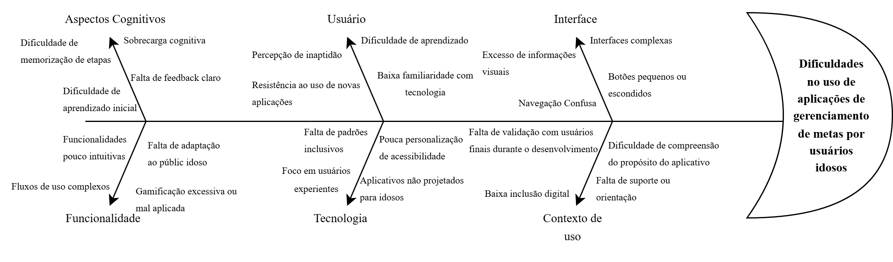
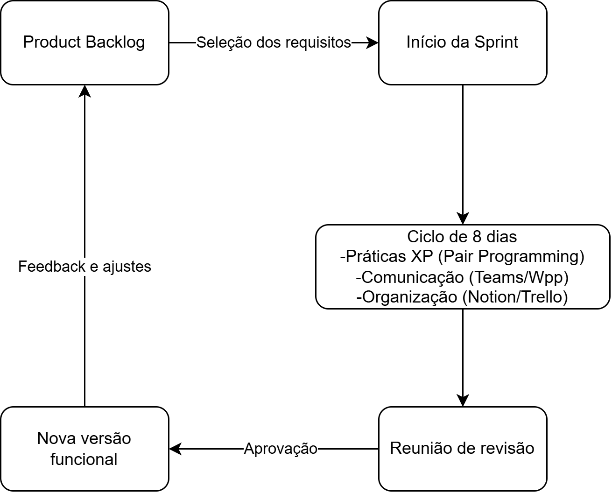

HOPLIFE
Visão do Produto e do Projeto
Versão 1.1
Tabela - Integrantes do Grupo
| Matrícula | Nome | Função (responsabilidade) | Pontos de participação |
|---|---|---|---|
| 242028628 | Arthur Rezende Barreto | Scrum Master / Analista do Problema / Desenvolvedor Back-End | 30 |
| 222006570 | Arthur Souto Santos | Analista do Problema / Desenvolvedor Front-End | 0 |
| 241012131 | Davi Barbosa Alves | Product Owner / Desenvolvedor Front-End | 10 |
| 242015586 | Daniel Almeida Torquato | Analista de Qualidade / Desenvolvedor Back-End | 0 |
| 232002717 | Gabriela de Paula Nascimento | Product Owner / Desenvolvedora Front-End | 20 |
| 222008824 | Ithalo Ribeiro Dias | Analista do Problema / Desenvolvedor Front-End | 0 |
| 241012042 | Levi Evangelista Santos | Analista do Problema / Desenvolvedor Back-End | 20 |
| 232014511 | Maria Eduarda do Nascimento Vieira | Analista de Qualidade / Desenvolvedora Front-End | 0 |
| 232021928 | Maria Eduarda Rodrigues Morais | Product Owner / Desenvolvedora Front-End | 0 |
| 242005051 | Roberto de Oliveira Brito Filho | Scrum Master / Product Owner / Desenvolvedor Back-End | 20 |
Pontos de participação dos membros da equipe.
Devem fechar 100 pontos para toda a equipe.
Histórico de Revisões
| Data | Versão | Descrição | Autor(es) |
|---|---|---|---|
| 05/05/2026 | 1.0 | Criação do Documento | Equipe Hopper |
| 02/06/2026 | 1.1 | Correções textuais, ajustes estruturais e revisão geral | Arthur Rezende |
Sumário
- 1 Visão Geral do Produto
- 1.1 Problema
- 1.2 Declaração de Posição do Produto
- 1.3 Objetivos do Produto
- 1.4 Tecnologias a Serem Utilizadas
- 2 Visão Geral do Projeto
- 2.1 Ciclo de vida do projeto de desenvolvimento de software
- 2.2 Organização do Projeto
- 2.3 Planejamento das Fases e/ou Iterações do Projeto
- 2.3.1 Definições dos Entregáveis (Aliases)
- 2.4 Matriz de Comunicação
- 2.5 Gerenciamento de Riscos
- 2.6 Critérios de Replanejamento
- 3 Processo de Desenvolvimento de Software
- 4 Declaração de Escopo do Projeto
- 4.1 Backlog do produto
- 4.2 Perfis
- 4.3 Cenários
- 4.4 Tabela de Backlog do produto
- 5 Métricas e Medições
- 5.1 GQM de medições
- 6 Testes de Software
- 6.1 Estratégia de testes
- 6.2 Roteiro de teste
- 7 Referências Bibliográficas
1 Visão Geral do Produto
1.1 Problema
As aplicações digitais têm se tornado cada vez mais presentes no cotidiano desde a popularização dos computadores pessoais, intensificada a partir dos anos 2000. Nesse cenário, observa-se a existência de uma grande quantidade de sistemas voltados a diferentes finalidades. No entanto, uma parcela reduzida dessas aplicações é direcionada ao desenvolvimento pessoal e ao acompanhamento de metas.
Além disso, dentro desse grupo já limitado, há ainda menos soluções que consideram aspectos de acessibilidade para usuários com idade superior a 60 anos e com baixa familiaridade com tecnologia. Como consequência, muitos desses sistemas não atendem adequadamente às necessidades desse público, apresentando interfaces complexas, excesso de informações visuais e dificuldades de navegação.
Dessa forma, identifica-se a necessidade de soluções que não apenas realizem o gerenciamento de metas, mas que também sejam intuitivas, acessíveis e utilizem elementos de gamificação de forma equilibrada, sem sobrecarregar o usuário.
Essa necessidade é reforçada por estudos sobre inclusão digital na terceira idade, que evidenciam que fatores como vulnerabilidade, medo de uso e percepção de inaptidão atuam como barreiras significativas à adoção de tecnologias, enquanto aspectos como otimismo e percepção de necessidade favorecem essa adoção (FARIAS et al., 2015).
Diante desse cenário, o problema identificado consiste na ausência de aplicações de gerenciamento de metas que sejam adequadas às necessidades de usuários idosos, especialmente aqueles com baixa familiaridade tecnológica, o que limita sua inclusão digital e dificulta o uso de ferramentas que poderiam contribuir para sua organização pessoal e qualidade de vida.
Como forma de mitigar esse problema, propõe-se o desenvolvimento de um software de gerenciamento de metas voltado ao público idoso, com foco em acessibilidade e usabilidade. A solução deverá apresentar uma interface simplificada, com navegação intuitiva, redução de elementos visuais excessivos e utilização moderada de técnicas de gamificação, de modo a incentivar o engajamento sem gerar sobrecarga cognitiva. Com o objetivo de sintetizar as principais causas relacionadas ao problema identificado, foi elaborado um Diagrama de Ishikawa. A ferramenta permite visualizar, de forma estruturada, os fatores que contribuem para as dificuldades enfrentadas por usuários idosos no uso de aplicações de gerenciamento de metas.
A Figura 1 apresenta o diagrama com as principais categorias de análise.
Figura 1 – Diagrama de Ishikawa

Fonte: Elaboração própria
1.2 Declaração de Posição do Produto
Para pessoas com idade avançada e/ou com baixa familiaridade tecnológica, que necessitam organizar suas tarefas periódicas ou metas determinadas de forma simples, este software é uma aplicação web de gerenciamento de tarefas gamificada que oferece interface acessível, intuitiva e motivadora, ao contrário de aplicativos tradicionais que são complexos e pouco acessíveis. Nosso produto prioriza simplicidade, acessibilidade e engajamento progressivo.
O produto proposto busca atender a uma lacuna identificada no mercado de aplicações de gerenciamento de tarefas, especialmente no que se refere à acessibilidade para usuários idosos. Diferentemente de soluções convencionais, que frequentemente apresentam interfaces densas e pouco intuitivas, o sistema prioriza a redução da carga cognitiva e poluição visual e a clareza das interações. Além disso, a utilização de elementos de gamificação ocorre de maneira controlada e adaptada ao público-alvo, com o objetivo de incentivar o uso frequente e contínuo sem gerar confusão ou sobrecarga. Dessa forma, o produto se posiciona como uma ferramenta inclusiva, voltada não apenas à organização pessoal, mas também à promoção da autonomia digital.
Tabela 1 - Posição do produto no mercado
| Cláusula | Definição |
|---|---|
| Para: | Usuários buscando organização pessoal (em especial, pessoas idosas e/ou com dificuldades, para inclusão digital) |
| Necessidade: | Organização pessoal e inclusão digital |
| O (nome do produto): | Hoplife - Aplicação web de Gerenciamento de metas e vida pessoal |
| Que: | possui uma interface limpa e organizada onde as funções podem ser executadas de forma intuitiva e com poucos comandos. |
| Ao contrário: | de outras opções que não tem foco em acessibilidade e podem se demonstrar complexas demais e pouco engajantes. |
| Nosso produto: | visa ser acessível e estimulante para todos os usuários tirarem o melhor proveito desse através de gestão de metas pessoais e um sistema engajante que propõe sentimento de satisfação e recompensa, ao mesmo tempo que integra usuários não muito acostumados ao ambiente digital. |
Fonte: Elaboração própria
1.3 Objetivos do Produto
O projeto visa desenvolver uma aplicação web de gerenciamento de tarefas e metas com foco em acessibilidade e usabilidade, voltada em ser intuitiva para usuários com 60 anos ou mais, promovendo organização pessoal, engajamento e inclusão digital. Objetivos específicos incluem:
- Desenvolver uma interface acessível, com alto contraste, tipografia adequada e elementos visuais de fácil identificação;
- Garantir uma navegação simples e intuitiva, com redução do número de etapas (ou cliques) necessárias para execução das principais ações;
- Implementar funcionalidades básicas de gerenciamento de tarefas, como criação, edição, visualização e conclusão de metas periódicas ou determinadas;
- Incorporar elementos de gamificação de forma moderada, visando incentivar o uso contínuo sem comprometer a clareza da interface;
- Reduzir a carga cognitiva do usuário por meio de organização visual simplificada e feedbacks claros;
- Validar continuamente a usabilidade do sistema ao longo do desenvolvimento, por meio de testes e revisões iterativas;
- Promover a inclusão digital do público idoso, facilitando o uso de tecnologias no cotidiano.
1.4 Tecnologias a Serem Utilizadas
O projeto utilizará uma arquitetura tecnológica selecionada para garantir robustez, segurança e alta acessibilidade, fatores críticos para o público-alvo da aplicação. A adoção de tecnologias adequadas ao contexto do projeto é um fator importante para garantir qualidade, manutenibilidade e evolução do software ao longo do ciclo de desenvolvimento (PRESSMAN; MAXIM, 2020). A pilha de tecnologias (tech stack) abrange linguagens, frameworks, ferramentas de qualidade e ambientes conteinerizados, descritos a seguir:
- Linguagem de Programação e Back-end: A linguagem principal adotada para a lógica de negócios e estruturação do servidor será Python, utilizando o framework Django. Esta escolha visa acelerar o desenvolvimento de uma base sólida, favorecendo a produtividade e a organização do projeto (PRESSMAN; MAXIM, 2020) e facilitando a comunicação direta e otimizada com o banco de dados;
- Front-end e Responsividade: Para a interface com o usuário, serão utilizados HTML, CSS e JavaScript, integrados ao framework Bootstrap. O uso do Bootstrap garante que a aplicação seja responsiva (adaptável a telas de dispositivos móveis) e permite a implementação nativa de componentes de acessibilidade visual, como botões de grande proporção e esquemas de alto contraste;
- Banco de Dados: O armazenamento e a persistência das informações serão gerenciados pelo SQLite. Por ser um banco de dados relacional leve e embutido no ambiente Python, ele elimina a necessidade de configuração de infraestruturas complexas de servidores, atendendo perfeitamente aos requisitos de concorrência e volume de dados previstos para o escopo desta entrega. O acesso e a manipulação dos dados serão abstraídos por meio de um mapeamento objeto-relacional (ORM), facilitando o desenvolvimento da equipe sem exigir a escrita de consultas SQL manuais;
- Segurança e Autenticação (IAM): O gerenciamento de identidades e acessos será feito por meio do Keycloak. Esta ferramenta será responsável pelo gerenciamento de identidade, autenticação e autorização dos usuários, utilizando protocolos de segurança consolidados como OAuth2 e OpenID Connect. Oferecendo uma camada extra de proteção e confiabilidade contra fraudes e acessos indevidos;
- Qualidade e Inspeção de Código: O SonarQube será integrado ao repositório para realizar a análise estática contínua do código-fonte. A ferramenta automatizará a detecção de code smells, rastreamento de débito técnico e a prevenção de vulnerabilidades de segurança. A utilização de inspeção estática de código contribui para a identificação precoce de defeitos e redução da dívida técnica (PRESSMAN; MAXIM, 2020);
- Ambiente, Versionamento e Ferramentas: O ambiente de desenvolvimento integrado (IDE) padronizado pela equipe será o Visual Studio Code (VS Code). O controle de versão e a hospedagem do código ocorrerão via Git e GitHub. Adicionalmente, o Docker será empregado para a conteinerização dos serviços (como o Keycloak e o SonarQube), facilitando a padronização do ambiente de execução entre os membros da equipe.
Detalhamentos posteriores e especificações técnicas de infraestrutura poderão ser necessários ao longo do tempo. Eles serão o alvo do documento de arquitetura do software, que descreverá de forma aprofundada como essas tecnologias serão aplicadas e integradas no desenvolvimento da solução.
2 Visão Geral do Projeto
2.1 Ciclo de vida do projeto de desenvolvimento de software
A definição do ciclo de vida deste projeto busca um equilíbrio entre a organização necessária para um trabalho acadêmico e a flexibilidade para criar um aplicativo voltado ao público idoso. A seguir, detalhamos como esse modelo vai funcionar na prática:
- Metodologia (abordagem filosófica): As metodologias ágeis enfatizam adaptação contínua, colaboração entre os envolvidos e entregas incrementais de software ao longo do desenvolvimento (SOMMERVILLE, 2019). Como nosso objetivo central é a acessibilidade para pessoas com baixa familiaridade tecnológica, o desenvolvimento precisa ser adaptável. O modelo ágil nos permite evoluir o software com base nos feedbacks reais dos usuários, evitando gastar tempo em funcionalidades que possam gerar sobrecarga visual ou confusão;
- Processo (conjunto de atividades): Trabalharemos com uma abordagem híbrida, unindo Scrum e Extreme Programming (XP). O Scrum fornece uma estrutura de gerenciamento baseada em iterações curtas e inspeção contínua, enquanto o XP complementa o processo com práticas técnicas voltadas à qualidade do software (SCHWABER; SUTHERLAND, 2020; SOMMERVILLE, 2019). O Scrum será usado para organizar a gestão do projeto e nosso backlog de metas e gamificação. Já o XP entra para garantir a qualidade técnica, ajudando a equipe a produzir um código limpo, robusto e fácil de manter;
- Procedimentos (guia o modo de fazer): Nosso trabalho será dividido em Sprints de 8 dias, acompanhadas de reuniões periódicas para monitorar o progresso e possíveis riscos. Também vamos adotar a Programação em Pares (Pair Programming) para diminuir a chance de erros lógicos e manter um padrão de qualidade no código feito por diferentes membros da equipe;
- Métodos (técnica formal): Para definir o que o sistema precisa ter, usaremos Histórias de Usuário (User Stories), entrevistas e sessões de brainstorming. Isso é essencial para transformar as dificuldades dos idosos em soluções técnicas. Nosso esquema de priorização garante que os requisitos obrigatórios (MUST), como botões grandes e navegação simples, sejam entregues logo na primeira versão funcional (MVP);
- Ferramentas (instrumentos de apoio): Para a gestão e o desenvolvimento, usaremos o Trello para controlar o fluxo de tarefas e o Notion para centralizar toda a documentação. Na comunicação, o WhatsApp será usado para o alinhamento rápido do dia a dia da equipe, enquanto o Microsoft Teams será o nosso canal oficial para as reuniões formais e ritos do Scrum.
2.2 Organização do Projeto
A tabela a seguir apresenta a organização das responsabilidades entre os membros da equipe. O objetivo desta estruturação é direcionar o fluxo de trabalho e garantir que todas as etapas necessárias para o desenvolvimento do software tenham responsáveis claros. Ressalta-se que esta divisão não estabelece qualquer relação de hierarquia ou subordinação: todos os integrantes são igualmente importantes e corresponsáveis pelo sucesso do projeto.
Tabela 2 - Divisão de atribuições e responsabilidades
| Papel | Atribuições | Responsável | Participantes |
|---|---|---|---|
| Scrum Master | Garantir a aplicação do framework ágil, remover impedimentos, facilitar as cerimônias e promover a comunicação fluida entre todas as frentes de trabalho. | Integrantes AR e R | Arthur Rezende, Roberto Filho |
| Product Owner | Levantar os requisitos, criar e priorizar o Backlog, além de validar as entregas junto ao cliente. | Integrantes R, DB, P e MR | Roberto Filho, Davi Barbosa, Gabriela de Paula, Maria Eduarda Rodrigues |
| Analista do Problema | Analisar o problema do usuário (público idoso) | Integrantes AR, AS, L e I | Arthur Rezende, Arthur Souto, Levi Evangelista e Ithalo Ribeiro |
| Analista de Qualidade | Executar os Casos de Teste (CTs), garantir o cumprimento do Definition of Done, configurar o Docker e realizar inspeções de código via SonarQube. | Integrantes MN e DT | Maria Eduarda do Nascimento, Daniel Torquato |
| Desenvolvedor Front-End | Codificar a interface visual (HTML/CSS/Bootstrap), garantindo a responsividade e a aplicação de todos os requisitos de acessibilidade visual. | Integrantes AS, G, I, MN, MR, DB e P | Arthur Souto, Ithalo Ribeiro, Maria Eduarda do Nascimento, Maria Eduarda Rodrigues, Davi Barbosa e Gabriela de Paula |
| Desenvolvedor Back-End | Estruturar o banco de dados, implementar a lógica de negócios em Python (Django), integrar a segurança e fornecer os dados para a interface. | Integrantes AR, R, DT, L | Arthur Rezende, Roberto Filho, Daniel Torquato, Levi Evangelista Santos |
| Cliente | Fornecer feedback contínuo sobre a usabilidade, validar as telas e garantir que o produto atende às necessidades reais do público-alvo. | Stakeholders | Voluntários idosos |
Fonte: Elaboração própria
2.3 Planejamento das Fases e/ou Iterações do Projeto
A tabela a seguir apresenta o ciclo de vida do projeto, estruturado em iterações curtas (sprints) para garantir o desenvolvimento contínuo e a validação frequente das funcionalidades. O cronograma define os prazos, os artefatos a serem gerados e os respectivos responsáveis por cada ciclo. Em conformidade com as práticas ágeis, este planejamento é um documento vivo e será atualizado sucessivamente a partir da realização de cada sprint.
Tabela 3 – Planejamento das fases
| Sprint | Produto (Entrega) | Data Início | Data Fim | Entregável(eis) | Responsáveis | % conclusão |
|---|---|---|---|---|---|---|
| Sprint 1 | Definição e Infraestrutura | 07/05/2026 | 14/05/2026 | DOC-ARQ, INFRA-BASE | Scrum Master, QA, PO | 100% |
| Sprint 2 | Acesso e Autenticação | 15/05/2026 | 22/05/2026 | US2, US3 | Desenvolvedores | 100% |
| Sprint 3 | Interface Acessível | 23/05/2026 | 30/05/2026 | US1 | Desenvolvedores, QA | 50% |
| Sprint 4 | Core: Cadastro de Metas | 31/05/2026 | 07/06/2026 | US4 | Desenvolvedores | 0% |
| Sprint 5 | Interatividade e Prevenção | 08/06/2026 | 15/06/2026 | US5, US8 | Desenvolvedores, QA | 0% |
| Sprint 6 | Categorias e Tutoriais | 16/06/2026 | 23/06/2026 | US6, US11 | Desenvolvedores | 0% |
| Sprint 7 | Gamificação e Progresso | 24/06/2026 | 01/07/2026 | US7, US9 | Desenvolvedores | 0% |
| Sprint 8 | Acessibilidade Avançada | 02/07/2026 | 09/07/2026 | US10 | Desenvolvedores | 0% |
| Sprint 9 | Homologação e Entrega | 10/07/2026 | 17/07/2026 | TEST-FINAL, RELAT-SONAR | Equipe Inteira, Cliente | 0% |
Fonte: Elaboração própria
2.3.1 Definições dos Entregáveis (Aliases)
- DOC-ARQ: Documento de Arquitetura do Software finalizado e Backlog do Produto.
- INFRA-BASE: Ambiente de desenvolvimento configurado (Repositório, Docker, Banco de Dados).
- US1: Como usuário idoso, quero ser capaz de ler e entender facilmente os botões.
- US2: Como usuário idoso, quero entrar e usar facilmente o site.
- US3: Como usuário idoso, quero criar e entrar na minha conta rapidamente.
- US4: Como usuário idoso, quero ter minhas metas diárias bem explicitas por meio de interfaces óbvias.
- US5: Como usuário idoso, quero ser capaz de inserir novas metas, além das que eu já tinha colocado.
- US6: Como usuário idoso, quero categorizar minhas metas em áreas da vida (saúde, estudos, hábitos, lazer etc.) para organizar melhor meus objetivos.
- US7: Como usuário idoso, quero ser capaz de ver quais metas eu já cumpri de forma gráfica.
- US8: Como usuário idoso, quero ter a opção de desfazer uma ação de exclusão imediatamente, para que eu não perca meus dados caso clique no botão errado sem querer.
- US9: Como usuário idoso, quero ter um estímulo positivo ao ter cumprido minhas metas.
- US10: Como usuário idoso, quero que o sistema ignore toques acidentais ou repetidos muito rápidos, para que eu não abra páginas ou exclua itens por erro de precisão motora.
- US11: Como usuário idoso, quero aprender a usar o sistema.
- TEST-FINAL: Bateria completa de testes do sistema executada com sucesso.
- RELAT-SONAR: Relatório de inspeção de código (ausência de vulnerabilidades) gerado pela ferramenta de qualidade.
2.4 Matriz de Comunicação
Esta seção descreve a estratégia de comunicação adotada para monitoramento do progresso do projeto, garantindo o alinhamento entre os membros da equipe, a resolução rápida de impedimentos e a transparência com os stakeholders (cliente). A estratégia baseia-se nas cerimônias do Scrum adaptadas para a realidade do ambiente acadêmico e para o ciclo de sprints curtas.
Tabela 4 – Matriz de Comunicação
| Descrição | Área / Envolvidos | Periodicidade | Produtos Gerados |
|---|---|---|---|
| Acompanhamento das atividades em andamento (Daily Scrum / Alinhamento técnico) | Equipe de desenvolvimento / Scrum Master | Diária (Pode ser assíncrona via grupo de mensagens) | Atualização do Trello (movimentação dos cards da sprint) e relato de impedimentos. |
| Acompanhamento dos Riscos, Compromissos, Ações Pendentes e Indicadores (Sprint Planning e Retrospective) | Toda a equipe do projeto | Semanal (A cada final/início de Sprint) | Ata de reunião registrada no Notion, Painel de Riscos atualizado e Planilha de Métricas (GQM) preenchida. |
| Relatório de situação do projeto e Validação (Sprint Review) | Product Owner (PO), Equipe e Cliente (Voluntários Idosos) | Quinzenal (A cada 2 Sprints) | Relatório de situação do projeto (documentado no Notion) comunicando o andamento geral, feedbacks documentados e aceite de User Stories. |
Fonte: Elaboração própria
2.5 Gerenciamento de Riscos
O Gerenciamento de Riscos deste projeto consiste na identificação, monitoramento e controle contínuo de eventos que possam impactar negativamente o desenvolvimento do software e o cumprimento do cronograma. O processo envolve o registro inicial das ameaças, a execução de ações preventivas (mitigação) para riscos com alto grau de exposição e a aplicação de planos corretivos (contingência) caso o risco se confirme.
Integração com Métricas e Critérios de Replanejamento: A estratégia de monitoramento de riscos está diretamente vinculada ao Plano de Medição (GQM) do projeto. O acompanhamento periódico ocorre ao final de cada sprint (ciclos de 8 dias), utilizando o Trello para auditoria visual das entregas e o Notion para o registro formal das atas de revisão. As métricas definidas na Tabela de GQM atuam como "gatilhos" quantitativos para a confirmação dos riscos e acionamento dos Critérios de Replanejamento:
- Se o Desvio de Prazo ultrapassar a tolerância de 10%, o risco de atraso no cronograma é confirmado, exigindo a redução de escopo da sprint seguinte.
- Se o Débito Técnico (DT) superar 20%, o risco de acúmulo de dívida técnica é confirmado, pausando o desenvolvimento de novas User Stories para focar em refatoração.
- Se a Densidade de Defeitos (DD) for maior que 1 defeito por US, o risco de baixa qualidade do produto é confirmado, exigindo ciclos focados em correção via SonarQube.
A tabela a seguir apresenta os riscos iniciais registrados no Painel de Controle do Projeto, organizados por seu grau de exposição e acompanhados de seus respectivos planos de ação. Esta lista será revisada e atualizada periodicamente ao longo do projeto.
Tabela 5 – Mapeamento e planejamento de riscos
| Risco Identificado | Grau de Exposição | Plano de Mitigação (Prevenção) | Plano de Contingência (Ação Corretiva) |
|---|---|---|---|
| Atraso na entrega das Sprints (Desvio de Prazo > 10%) | Alto | Realizar Daily Scrums para identificar impedimentos precocemente e manter o escopo das sprints (de 8 dias) estritamente reduzido e factível. | O Product Owner (PO) e o Scrum Master (SM) deverão renegociar o escopo, movendo as User Stories não finalizadas para o backlog da próxima sprint. |
| Acúmulo de Débito Técnico (DT > 20% das entregas planejadas) | Alto | A equipe de Qualidade (QA) realizará inspeções rigorosas contínuas de código utilizando o SonarQube antes da aprovação de qualquer Pull Request. | Paralisar o desenvolvimento de novas funcionalidades (US) e dedicar a sprint subsequente exclusivamente para refatoração e adequação do código. |
| Alta Densidade de Defeitos (DD > 1 por US / Rejeição de Testes > 10%) | Médio | Codificar testes unitários logo após a lógica de negócios e garantir que o Definition of Done seja estritamente seguido pelos Desenvolvedores. | Alocar a equipe técnica para mutirões de correção de bugs, aumentando a cobertura de testes automatizados e revisando o fluxo de integração contínua. |
| Baixa usabilidade ou rejeição pelo público-alvo (Idosos) | Alto | Desenvolver a interface utilizando componentes acessíveis nativos do Bootstrap desde a Sprint 3 (US1) e focar na redução da carga cognitiva na tela. | Realizar reuniões de validação emergenciais com os Stakeholders (Cliente/Voluntários) para redesenhar o fluxo de telas ou o tamanho dos elementos visuais. |
| Falha na Integração de Tecnologias (Django, Keycloak, Docker) | Médio | Inicializar a infraestrutura completa na Sprint 1 antes de qualquer tela ser codificada, garantindo a estabilidade dos contêineres e banco de dados. | Alocar os membros com perfil Full-Stack temporariamente para atuar junto à infraestrutura, resolvendo os bloqueios de comunicação entre os serviços. |
| Desfalque temporário ou indisponibilidade de membro da equipe | Médio | Promover a ausência de hierarquia, garantindo que o conhecimento sobre o código seja compartilhado e não centralizado em uma única pessoa. | Redistribuir as tarefas essenciais do membro ausente entre os demais integrantes, reduzindo proporcionalmente o número de entregáveis da sprint afetada. |
Fonte: Elaboração própria
2.6 Critérios de Replanejamento
O replanejamento do projeto ocorrerá sempre que os planos de mitigação e contingência não forem suficientes para conter o impacto de um risco materializado, exigindo alterações na linha de base de escopo, prazo ou recursos do projeto.
Os critérios que disparam a necessidade de um replanejamento estão diretamente alinhados aos riscos do projeto e monitorados quantitativamente através das métricas definidas no GQM (Tabela 11). São eles:
- Critério 1: Estouro Contínuo de Cronograma (Risco de Atraso)
- Gatilho: A métrica de Desvio de Prazo ultrapassar a tolerância de 10% por duas sprints consecutivas, ou a Velocidade da Equipe cair drasticamente abaixo do planejado.
- Ação de Replanejamento: O Product Owner (PO) deverá renegociar o escopo, retirando as User Stories de menor prioridade (ex: funcionalidades de gamificação avançada) do cronograma atual e repassando-as para o Product Backlog futuro. O calendário das sprints subsequentes deverá ser refeito.
- Critério 2: Comprometimento Crítico da Qualidade (Risco Técnico)
- Gatilho: A métrica de Débito Técnico (DT) ultrapassar 20% ou a Densidade de Defeitos (DD) se manter acima de 1 defeito/US.
- Ação de Replanejamento: O planejamento das sprints seguintes será alterado. O desenvolvimento de novas funcionalidades será paralisado e uma Sprint de Refatoração será inserida emergencialmente no cronograma para sanar a dívida técnica e adequar o código via SonarQube.
- Critério 3: Desfalque Definitivo da Equipe (Risco de Recursos Humanos)
- Gatilho: Saída permanente ou indisponibilidade prolongada de um ou mais membros essenciais (Desenvolvedores ou QA).
- Ação de Replanejamento: O esforço total do projeto será recalculado com base na nova capacidade produtiva da equipe. O escopo do Produto Mínimo Viável (MVP) será reduzido e o cronograma reestruturado.
Procedimento de Atualização: Os critérios de replanejamento serão acompanhados e avaliados ao final de cada ciclo, durante a cerimônia de Sprint Retrospective. Caso qualquer um dos critérios acima seja atingido e o replanejamento seja aplicado, o cronograma e o escopo serão ajustados e este documento do projeto sofrerá um novo versionamento oficial, refletindo o planejamento atualizado e documentando os motivos da mudança.
3 Processo de Desenvolvimento de Software
Esta seção atua como um guia orientador para o desenvolvimento do software, que será conduzido pelas metodologias ágeis SCRUM (focado na gestão) e XP (focado nas práticas técnicas). As responsabilidades da equipe baseiam-se no SCRUM.
O processo possui um fluxo lógico estruturado em Sprints de 8 dias. Cada ciclo se inicia utilizando o Product Backlog como recurso primário para o planejamento. Durante a execução, a equipe adota práticas do XP, como a Programação em Pares (Pair Programming), aliadas a alinhamentos contínuos para manter o foco na usabilidade do idoso. O fim do ciclo culmina na reunião de revisão, que gera como resultado a entrega de um incremento de software funcional e validado. A Figura 2 apresenta o diagrama que ilustra este fluxo de trabalho.
Figura 2 – Fluxograma do processo de desenvolvimento

Fonte: Elaboração própria
4 Declaração de Escopo do Projeto
4.1 Backlog do produto
A Tabela 6 apresenta os requisitos identificados durante o processo de elicitação, bem como sua classificação de prioridade segundo a técnica MoSCoW, que classifica os requisitos em Must, Should, Could e Won’t, permitindo identificar os elementos essenciais para a entrega do produto. Além disso, são apresentados os tipos de requisitos e as respectivas técnicas utilizadas para sua obtenção, permitindo rastrear a origem das necessidades do sistema.
Tabela 6 - Elicitação e Priorização do Backlog do Produto
| Cenário | Requisito | Prioridade (MoSCoW) | Tipo | Forma de Elicitação |
|---|---|---|---|---|
| Tela inicial do sistema | Interface com letras grandes e contraste alto | MUST | Não funcional | Entrevistas e pesquisas |
| Tela inicial do sistema | Botões grandes e objetivos | MUST | Não funcional | Entrevistas e pesquisas |
| Navegação | Poucas abas e redirecionamento objetivo (poucos cliques) | MUST | Não funcional | Brainstorm e entrevistas |
| Navegação | Demonstrar sempre onde o usuário está no software | SHOULD | Não funcional | Brainstorm e entrevistas |
| Interação | Sons e mudança visual ao clicar em botões | SHOULD | Funcional | Pesquisas |
| Aprendizado | Tutorial obrigatório ao acessar pela primeira vez, disponível para ser usado em vezes subsequentes | MUST | Funcional | Entrevistas e pesquisa |
| Aprendizado | Ícone de interrogação fixo de fácil acesso em todas as páginas que explica em texto a função daquela página | SHOULD | Funcional | Brainstorm e pesquisas |
| Personalização | Capacidade de alterar o tamanho e cores de letras, interface etc. | COULD | Funcional | Entrevistas e pesquisas |
| Registro de metas | Criar, editar, excluir e marcar metas como concluídas com feedback imediato | MUST | Funcional | Brainstorm e reuniões de equipe |
| Registro de metas | Exibir confirmação clara antes de excluir uma meta e oferecer a opção de desfazer para ações críticas | MUST | Funcional | Brainstorm |
| Acompanhamento | Visualizar o progresso das metas de forma clara e visual | MUST | Funcional | Pesquisas |
| Acompanhamento | Enviar notificações simples e não invasivas para lembrar o usuário de suas metas | SHOULD | Funcional | Entrevistas e análise de outras aplicações |
| Organização de metas | Permitir categorizar metas por áreas (saúde, estudos, hábitos pessoais, lazer, etc) | SHOULD | Funcional | Brainstorm e pesquisas |
| Gamificação | Exibir streaks e mensagens motivacionais ao concluir metas | SHOULD | Funcional | Análise de concorrentes e brainstorming |
| Interação e acessibilidade motora | O sistema deve possuir “Dead Zone” e suavização de cliques (debounce), ignorando toques rápidos repetidos no mesmo botão | SHOULD | Não funcional | Pesquisas em guias de acessibilidade |
| Interação e acessibilidade motora | Clique de permanência (Dwell click) que permite o usuário clicar automaticamente ao colocar o mouse em cima de um botão, por exemplo | COULD | Funcional | Brainstorm e pesquisas |
Fonte: Elaboração própria
Classificação de Prioridades (Visão da Equipe):
- MUST (Obrigatório): Requisitos essenciais para a viabilidade e utilidade mínima do produto. Como o foco principal do software é a inclusão digital do público 60+ com baixa familiaridade tecnológica, todos os requisitos básicos de acessibilidade visual (letras grandes, alto contraste) e navegação estruturada (poucos cliques, tutorial) foram classificados como MUST. Sem eles, o público-alvo não conseguirá utilizar a aplicação.
- SHOULD (Desejável): Requisitos que agregam valor significativo à experiência e segurança do usuário, como feedback visual/sonoro e rastreabilidade de onde ele está no sistema. São importantes para evitar frustrações, mas o sistema central de metas pode operar em uma versão inicial (MVP) sem eles.
- COULD (Pode ter): Funcionalidades extras, como alta personalização de cores e tamanhos de fonte pelo próprio usuário. Melhoram o engajamento, mas não são vitais para o funcionamento da aplicação, podendo ser implementados em versões futuras.
4.2 Perfis
A Tabela 7 descreve os perfis considerados durante o levantamento dos requisitos do sistema. Para cada perfil são apresentadas suas características, permissões de acesso e as técnicas utilizadas para compreender suas necessidades e expectativas em relação ao produto.
Tabela 7 - Perfis de acesso
| # | Nome do perfil | Características do perfil | Permissões de acesso | Técnicas de elicitação |
|---|---|---|---|---|
| 1 | Usuário Idoso | Cliente principal para a utilização do software, deve saber usá-lo de forma fácil e intuitiva | Telas de usuário | Entrevistas, pesquisas, brainstorm e feedback |
| 2 | Equipe de desenvolvimento | Própria equipe que fará a manutenção por meio de uma interface de administrador | Telas de usuário, front-end, back-end | Brainstorm, pesquisas |
Fonte: Elaboração própria
Técnicas de Elicitação:
- Pesquisas (Análise de Concorrência e Feedback): Utilizadas para compreender as necessidades do "Usuário Idoso". A pesquisa baseou-se na análise de comentários e avaliações de usuários em lojas de aplicativos (como Play Store e App Store) sobre aplicações gamificadas já existentes. Isso permitiu identificar frustrações reais com interfaces complexas e validar a necessidade de uma solução mais limpa e acessível.
- Brainstorming: Utilizado pela "Equipe de desenvolvimento" como ferramenta principal para cruzar as dores encontradas nas pesquisas com soluções técnicas viáveis. O brainstorming permitiu definir as regras de negócio, como a restrição de navegação e o uso de alto contraste, de forma colaborativa.
- Entrevistas e Feedback: Aplicadas para validar as ideias geradas no brainstorming diretamente com potenciais usuários do público-alvo, garantindo que propostas como o "tutorial obrigatório" sejam realmente eficazes para a inclusão digital do idoso.
- Análise de Concorrentes: Foi realizada uma análise de concorrentes em aplicativos de gerenciamento de metas e hábitos disponíveis na Play Store e App Store. A pesquisa revelou que a maioria das soluções apresenta interfaces sobrecarregadas, navegação complexa e baixa acessibilidade, especialmente para usuários com pouca familiaridade com tecnologia. Essa análise reforçou a necessidade de desenvolver um sistema mais simples, intuitivo e acessível, com foco em usabilidade e gamificação leve, diferenciando-se das soluções existentes no mercado.
4.3 Cenários
Os cenários funcionais foram descritos utilizando User Stories, uma técnica amplamente utilizada em projetos ágeis para representar necessidades do usuário de forma simples e orientada a valor (COHN, 2004). A Tabela 8 apresenta os cenários funcionais do sistema representados por meio de User Stories. Cada cenário descreve uma necessidade do usuário final e sua respectiva sprint de implementação, permitindo visualizar a distribuição das funcionalidades ao longo do cronograma do projeto.
Tabela 8 – User Stories (Cenários funcionais)
| Numeração do cenário | Nome do cenário | Sprints |
|---|---|---|
| US1 | Como usuário idoso, quero ser capaz de ler e entender facilmente os botões | 3 |
| US2 | Como usuário idoso, quero entrar e usar facilmente o site | 2 |
| US3 | Como usuário idoso, quero criar e entrar na minha conta rapidamente | 2 |
| US4 | Como usuário idoso, quero ter minhas metas diárias bem explicitas por meio de interfaces óbvias | 4 |
| US5 | Como usuário idoso, quero ser capaz de inserir novas metas, além das que eu já tinha colocado | 5 |
| US6 | Como usuário idoso, quero categorizar minhas metas em áreas da vida (saúde, estudos, hábitos, lazer etc.) para organizar melhor meus objetivos | 6 |
| US7 | Como usuário idoso, quero ser capaz de ver quais metas eu já cumpri de forma gráfica | 7 |
| US8 | Como usuário idoso, quero ter a opção de desfazer uma ação de exclusão imediatamente, para que eu não perca meus dados caso clique no botão errado sem querer. | 5 |
| US9 | Como usuário idoso, quero ter um estímulo positivo ao ter cumprido minhas metas | 7 |
| US10 | Como usuário idoso, quero que o sistema ignore toques acidentais ou repetidos muito rápidos, para que eu não abra páginas ou exclua itens por erro de precisão motora. | 8 |
| US11 | Como usuário idoso, quero aprender a usar o sistema. | 6 |
Fonte: Elaboração própria
4.4 Tabela de Backlog do produto
A Tabela 9 detalha o backlog do produto, relacionando os requisitos identificados com suas respectivas prioridades, descrições e User Stories associadas. Esse detalhamento permite compreender como os requisitos serão implementados e organizados ao longo das sprints planejadas.
Tabela 9: Backlog do produto detalhado
| Numeração | Sprint | Nome do requisito | Tipo de requisito | Priorização | Descrição sucinta do requisito | User Stories associadas |
|---|---|---|---|---|---|---|
| 1 | 3 | Acessibilidade Visual e Navegação | Não funcional | Must | Interface com letras e botões grandes, alto contraste, poucas abas e redirecionamento objetivo. | US1 |
| 2 | 2 | Tela de login/registro | Funcional | Must | Tela capaz de registrar as informações do usuário e guardá-las para um acesso posterior. | US2, US3 |
| 3 | 6 | Tutorial Inicial | Funcional | Must | Tutorial obrigatório ao acessar pela primeira vez, disponível para ser usado depois. | US11 |
| 4 | 4 e 5 | Gerenciamento/registro de Metas | Funcional | Must | Funcionalidade que permite ao usuário adicionar, remover, editar e preencher metas diárias com feedback imediato. | US4, US5 |
| 5 | 5 | Feedback Sensorial | Funcional | Should | Sons e mudança visual imediata ao clicar em botões para confirmar a interação. | US1, US4 |
| 6 | 7 | Histórico e Progresso | Funcional | Must | Demonstração com gráficos e dados em relação ao cumprimento de metas do usuário com metas concluídas por dia e resumos semanais. | US7 |
| 7 | 7 | Sistema de Recompensa (Gamificação) | Funcional | Should | Sistema de parabenização e estímulo positivo ao usuário ao cumprir metas executado por meio de feedback positivo, mensagens motivacionais, streaks e conquistas simples. | US9 |
| 8 | 8 | Personalização de Interface | Funcional | Could | Capacidade de o próprio usuário alterar o tamanho e cores de letras e da interface. | US1 |
| 9 | 7 | Acompanhamento e visualização de progresso | Funcional | Must | Visualizar o progresso das metas de forma clara e visual (pendentes e concluídas). | US7 |
| 10 | 6 | Categorização de metas | Funcional | Should | Categorizar metas em áreas da vida (saúde, estudos, hábitos, lazer e etc). | US6 |
| 11 | 5 | Recuperação de erros (undo) | Funcional | Must | Confirmação antes de excluir e opção de "Desfazer" para evitar perda de dados por cliques acidentais. | US8 |
| 12 | 6 | Ajuda contextual fixa | Funcional | Should | Ícone de interrogação fixo em todas as páginas com explicações simples sobre as funções da tela. | US11 |
| 13 | 6 | Sistema de lembretes | Funcional | Should | Notificações ou alertas visuais para lembrar o usuário de atualizar suas metas diárias. | US4 |
| 14 | 8 | Acessibilidade motora | Não funcional | Should | Implementação de Deadzone e Debounce para ignorar toques acidentais ou tremores. | US10 |
| 15 | 8 | Clique de permanência | Funcional | Could | Recurso de Dwell Click que aciona o botão apenas mantendo o cursor ou dedo sobre ele. | US10 |
Fonte: Elaboração própria
5 Métricas e Medições
Esta seção apresenta o plano de medição do projeto, elaborado com base na abordagem Goal/Question/Metric (GQM), proposta para derivar métricas a partir de objetivos específicos de medição (WANGENHEIM; WANGENHEIM; LINO, 2009; MOURA et al., 2009).
5.1 GQM de Medições
O objetivo de medição foi definido considerando o contexto do projeto e as necessidades de informação da equipe para monitoramento da qualidade do produto e do desempenho do processo de desenvolvimento. A Tabela 10 apresenta a estruturação desse objetivo segundo o paradigma GQM, detalhando seus componentes e o contexto de aplicação no projeto.
Tabela 10 – Objetivo de Medição GQM
| Dimensão GQM | Definição do Objetivo |
|---|---|
| Analisar: | O processo de desenvolvimento e o produto de software |
| Com o propósito de: | Monitorar, controlar e melhorar |
| Em relação a: | A qualidade do produto e desempenho do processo (cumprimento de sprints e ausência de defeitos) |
| Do ponto de vista de: | Gerente de projeto (Dono do Produto) e equipe de desenvolvimento |
| No contexto de: | Projeto acadêmico de desenvolvimento ágil (SCRUM + XP), de um aplicativo web de gerenciamento de metas gamificado para usuários 60+ |
Fonte: elaborado pelos autores, com base em Wangenheim, Wangenheim e Lino (2009).
A partir do objetivo de medição definido na Tabela 10 foram elaboradas três questões que operacionalizam o objetivo, desdobrando-o em aspectos mensuráveis. A Tabela 11 apresenta as métricas associadas a cada questão, incluindo suas fórmulas de cálculo, valores esperados e formas de análise utilizadas para monitorar o andamento do projeto.
Tabela 11 - Métricas e suas definições
| Questão | Métrica | Forma de Cálculo | Escala | Valor Esperado | Forma de Análise |
|---|---|---|---|---|---|
| Q1: Qual é o percentual de itens do backlog concluídos em cada sprint? | Débito Técnico (DT) | DT = (Itens planejados − Itens concluídos) / Itens planejados × 100 | % (percentual) | DT ≤ 20% por sprint | Verificado ao fim de cada sprint; se DT > 20%, acionar critério de replanejamento |
| Q1: Qual é o percentual de itens do backlog concluídos em cada sprint? | Velocidade da Equipe | Nº de itens do backlog concluídos por sprint | Itens/sprint | Estável ou crescente | Comparado entre sprints para tendência |
| Q2: Quantos defeitos são identificados e corrigidos antes da entrega? | Densidade de Defeitos (DD) | DD = Nº de defeitos encontrados / Nº de user stories implementadas | Defeitos/US | DD ≤ 1 defeito por US entregue | Coletado nos roteiros de teste; defeitos registrados no repositório |
| Q2: Quantos defeitos são identificados e corrigidos antes da entrega? | Taxa de Rejeição de Testes | Nº de casos de teste reprovados / Total de casos executados × 100 | % | ≤ 10% de reprovação por ciclo de testes | Acompanhado no roteiro de testes (seção 6) |
| Q3: O cronograma planejado está sendo cumprido? | Desvio de Prazo | ((Data real de entrega − Data planejada) / Duração da sprint) × 100 | % de atraso | 0% (sem atraso); tolerância de até 10% | Verificado ao final de cada sprint |
Fonte: elaborado pelos autores, com base em Wangenheim, Wangenheim e Lino (2009) e Moura et al. (2009).
As métricas selecionadas abrangem dois eixos principais: (i) o acompanhamento do processo de desenvolvimento, por meio do débito técnico, velocidade da equipe e desvio de prazo; e (ii) a qualidade do produto, verificada pela densidade de defeitos e taxa de rejeição de testes. Essa combinação permite à equipe identificar desvios com antecedência e fundamentar decisões de replanejamento nos critérios definidos na seção 2.6.
Os dados serão coletados ao final de cada sprint, registrados no repositório do projeto e consolidados em planilha eletrônica. Valores fora dos limites estabelecidos deverão ser discutidos na reunião de revisão de sprint.
6 Testes de Software
Os testes de software têm como objetivo verificar e validar se o sistema atende aos requisitos especificados e apresenta comportamento adequado durante sua utilização (PRESSMAN; MAXIM, 2020).
6.1 Estratégia de Testes
A estratégia adotada contempla testes unitários, de integração e de sistema, níveis amplamente empregados para assegurar a qualidade do software ao longo do desenvolvimento (SOMMERVILLE, 2019). A Tabela 12 apresenta a estratégia de testes adotada no projeto, especificando os níveis e tipos de testes, os ambientes utilizados, a política de versionamento e a forma de análise dos resultados. Essas definições têm como objetivo garantir a qualidade do produto e apoiar o acompanhamento das métricas apresentadas na seção anterior.
Tabela 12 - Estratégia de Testes de Software
| Componente | Definição da Estratégia |
|---|---|
| Níveis de Teste | Unitário, Integração e Sistema |
| Tipos de Teste | Funcional e Não Funcional (Usabilidade, Acessibilidade) |
| Ambientes de Teste | Local e Homologação |
| Política de Branches | Local (feature/*) → Homologação (develop) → Produção (main). Commits sobem para develop somente após aprovação nos testes unitários e de integração. |
| Forma de Análise | Previsto x Realizado: divergência = reprovação, registro do defeito, correção e reexecução. Resultados alimentam as métricas de Densidade de Defeitos e Taxa de Rejeição (seção 5). |
Fonte: Elaboração própria
6.2 Roteiro de Testes
Os casos de teste a seguir estão alinhados às User Stories e requisitos do backlog (seções 4.3 e 4.4). Os campos de resultado, evidências e reparos devem ser preenchidos após cada ciclo de execução.
CT-01 – Login e Registro
Nível: Integração
Tipo: Funcional
Precondições: Sistema em homologação; banco de dados acessível.
Aceito / Rejeitado: Login e registro concluídos em até 3 interações, sem erros. / Falha no fluxo ou erro não tratado.
Resultado Previsto: Usuário registra conta e realiza login com sucesso, sendo redirecionado à tela inicial.
Resultado Realizado: Evidências: Reparos Executados: Ciclos Executados: 1
CT-02 – Acessibilidade Visual
Nível: Sistema
Tipo: Não Funcional – Acessibilidade
Precondições: Ao menos uma tela disponível.
Aceito / Rejeitado: Contraste ≥ 4,5:1; botões ≥ 44×44px. / Qualquer elemento abaixo dos parâmetros.
Resultado Previsto: Inspeção com DevTools confirma que todos os elementos atendem aos parâmetros.
Resultado Realizado: Evidências: Reparos Executados: Ciclos Executados: 1
CT-03 – Cadastro e Visualização de Metas
Nível: Integração
Tipo: Funcional
Precondições: Usuário autenticado (CT-01 aprovado).
Aceito / Rejeitado: Meta exibida em até 2 segundos com dados corretos. / Meta não aparece, dados incorretos ou tempo > 5 segundos.
Resultado Previsto: Meta cadastrada aparece na listagem com nome e status 'pendente'.
Resultado Realizado: Evidências: Reparos Executados: Ciclos Executados: 1
CT-04 – Marcação Diária de Meta Cumprida
Nível: Sistema
Tipo: Funcional
Precondições: Usuário autenticado; ao menos uma meta cadastrada (CT-03 aprovado).
Aceito / Rejeitado: Status muda para 'concluída' e feedback positivo é exibido. / Status não muda ou feedback ausente.
Resultado Previsto: Usuário clica em 'Concluir' e o sistema registra o cumprimento com feedback visual/sonoro.
Resultado Realizado: Evidências: Reparos Executados: Ciclos Executados: 1
CT-05 – Histórico Gráfico de Metas
Nível: Sistema
Tipo: Funcional
Precondições: Usuário autenticado; ao menos 3 registros de cumprimento salvos.
Aceito / Rejeitado: Gráfico exibido com dados corretos e legível na resolução padrão. / Gráfico ausente, dados incorretos ou ilegível.
Resultado Previsto: Tela de histórico exibe gráfico com os dias de cumprimento de cada meta.
Resultado Realizado: Evidências: Reparos Executados: Ciclos Executados: 1
CT-06 – Tutorial no Primeiro Acesso
Nível: Sistema
Tipo: Funcional
Precondições: Usuário recém-registrado realizando o primeiro login.
Aceito / Rejeitado: Tutorial iniciado automaticamente; reacessível no menu. / Tutorial não exibido ou não reacessível.
Resultado Previsto: Tutorial exibido automaticamente no primeiro acesso e disponível em seção de ajuda.
Resultado Realizado: Evidências: Reparos Executados: Ciclos Executados: 1
CT-07 – Navegação em até 3 Cliques
Nível: Sistema
Tipo: Não Funcional – Usabilidade
Precondições: Sistema em execução.
Aceito / Rejeitado: Fluxos principais acessíveis em ≤ 3 cliques a partir da tela inicial. / Qualquer fluxo principal exigir mais de 3 cliques.
Resultado Previsto: Avaliador percorre os três fluxos principais e todos são concluídos dentro do limite.
Resultado Realizado: Evidências: Reparos Executados: Ciclos Executados: 1
CT-08 – Recuperação de Erros (Undo)
Nível: Sistema
Tipo: Funcional
Precondições: Usuário autenticado; Pelo menos uma meta cadastrada
Aceito / Rejeitado: Pop-up de confirmação exibido e opção ‘Desfazer’ funcional / Meta excluída sem aviso ou falha ao restaurar
Resultado Previsto: Usuário exclui a meta, confirma a exclusão, e aciona o botão desfazer. A meta retorna à listagem original.
Resultado Realizado: Evidências: Reparos Executados: Ciclos Executados: 1
CT-09 – Sistema de Recompensa e Streaks
Nível: Sistema
Tipo: Funcional
Precondições: Usuário autenticado; meta concluída no dia anterior.
Aceito / Rejeitado: Feedback motivacional e atualização do 'streak' exibidos. / Nenhuma mensagem exibida ou erro no contador.
Resultado Previsto: Ao concluir a meta em dias consecutivos, o sistema exibe mensagem motivacional parabenizando a constância e aumenta o contador de dias seguidos.
Resultado Realizado: Evidências: Reparos Executados: Ciclos Executados: 1
CT-10 – Categorização de Metas
Nível: Integração
Tipo: Funcional
Precondições: Usuário autenticado na tela de criação/edição de metas.
Aceito / Rejeitado: Meta salva e exibida com a categoria/cor correta. / Categoria não é salva ou exibida incorretamente na lista.
Resultado Previsto: Usuário seleciona uma categoria (ex: Saúde) ao criar a meta, e ela aparece na listagem principal com o identificador visual da respectiva categoria.
Resultado Realizado: Evidências: Reparos Executados: Ciclos Executados: 1
CT-11 – Ajuda contextual Fixa
Nível: Sistema
Tipo: Funcional
Precondições: Sistema em execução; usuário navegando pelas abas.
Aceito / Rejeitado: Ícone de interrogação (?) presente e clicável em todas as telas abrindo texto legível. / Ícone ausente ou texto ilegível.
Resultado Previsto: Ao clicar no ícone de interrogação fixo, um modal/balão explica a função da tela atual de forma simples e com fonte grande.
Resultado Realizado: Evidências: Reparos Executados: Ciclos Executados: 1
CT-12 – Sistema de lembretes
Nível: Sistema
Tipo: Funcional
Precondições: Usuário autenticado com metas pendentes no dia atual.
Aceito / Rejeitado: Notificação ou alerta visual exibido. / Nenhuma notificação ou alerta invasivo que confunda o usuário.
Resultado Previsto: O sistema emite um lembrete visual simples avisando o usuário sobre a meta pendente para ajudá-lo na rotina.
Resultado Realizado: Evidências: Reparos Executados: Ciclos Executados: 1
CT-13 – Personalização
Nível: Sistema
Tipo: Funcional
Precondições: Usuário autenticado acessando a tela de configurações.
Aceito / Rejeitado: Tamanho da fonte e cores alterados e mantidos na navegação e ajustes opcionais de acessibilidade motora. / Alterações não aplicadas ou resetadas ao mudar de tela.
Resultado Previsto: O usuário altera o tamanho da letra nas configurações, pode ativar as opções de acessibilidade motora a mudança é aplicada e salva em todo o sistema.
Resultado Realizado: Evidências: Reparos Executados: Ciclos Executados: 1
CT-14 – Acessibilidade motora (Debounce)
Nível: Integração
Tipo: Não Funcional
Precondições: Sistema em execução; página com botão de ação (ex: concluir meta) aberta.
Aceito / Rejeitado: O sistema ignora o segundo clique se ocorrer em menos de 500ms do primeiro. / O sistema registra duas execuções da mesma ação.
Resultado Previsto: O testador simula um "tremor" clicando 3 vezes rapidamente no botão; o sistema processa apenas 1 clique e ignora os demais sem gerar erro.
Resultado Realizado: Evidências: Reparos Executados: Ciclos Executados: 1
CT-15 – Clique de permanência (Dwell Click)
Nível: Sistema
Tipo: Funcional
Precondições: Recurso de "Dwell Click" ativado nas configurações; usuário navegando pelo sistema.
Aceito / Rejeitado: O botão é acionado automaticamente ao manter o cursor/dedo parado sobre ele por 2 segundos. / O botão não é acionado, exigindo clique físico.
Resultado Previsto: O usuário posiciona o ponteiro (ou mantém o dedo) sobre o botão "Salvar". Uma pequena animação de carregamento ocorre e a ação é confirmada sem necessidade de pressionar.
Resultado Realizado: Evidências: Reparos Executados: Ciclos Executados: 1
7 Referências Bibliográficas
- MOURA, Déborah Carvalho de; NERY, Paulo; SILVA, Carlos Vinícius Pereira da; CAMPOS, Danylo de Castro. GQM: Goal – Question – Metric. 2009.
- WANGENHEIM, Christiane Gresse von; WANGENHEIM, Aldo von; LINO, Juliana Izabel. Medição de Software: Guia Prático. Florianópolis: Bookess, 2009.
- FARIAS, Josivania Silva; VITOR, Thayane da Luz; LINS, Paula Valente; PEDROZA FILHO, Luiz Eduardo Azevedo. Inclusão digital na terceira idade: um estudo sobre a propensão de idosos à adoção de tecnologias da informação e comunicação (TICs). Revista Gestão & Tecnologia, Pedro Leopoldo, v. 15, n. 3, p. 164–188, set./dez. 2015. Disponível em: https://www.repositorio.unb.br/handle/10482/21740. Acesso em: 29 abr. 2026.
- COHN, Mike. User Stories Applied: For Agile Software Development. Boston: Addison-Wesley, 2004.
- PRESSMAN, Roger S.; MAXIM, Bruce R. Engenharia de Software: Uma Abordagem Profissional. 9. ed. Porto Alegre: AMGH, 2020.
- SOMMERVILLE, Ian. Engenharia de Software. 10. ed. São Paulo: Pearson, 2019.
- SCHWABER, Ken; SUTHERLAND, Jeff. The Scrum Guide: The Definitive Guide to Scrum: The Rules of the Game. 2020. Disponível em: https://scrumguides.org. Acesso em: 02 jun. 2026.